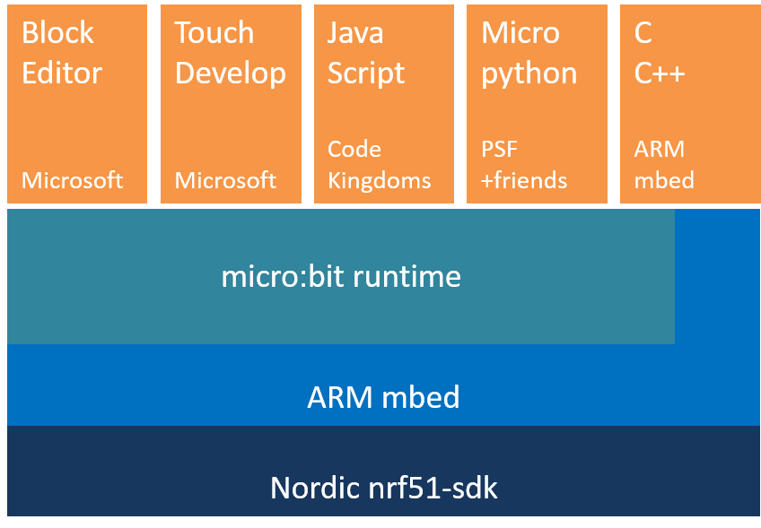
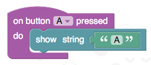

Các khái niệm¶
Bộ lệnh micro:bit runtime cung cấp một môi trường dễ sử dụng để lập trình cho BBC micro:bit bằng ngôn ngữ C/C++, viết bởi trường đại học Lancaster. Nó bao gồm các thư viện drivers cho tất cả các chức năng phần cứng của micro:bit, và cũng là một bộ các cơ chế thực thi (runtime) để giúp việc lập trình micro:bit được dễ hơn và uyển chuyển hơn. Chúng bao gồm từ việc đều khiển một màn hình LED ma trận đến truyền tín hiệu radio ngang cấp (peer-to-peer) và các dịch vụ Bluetooth năng lượng thấp (BLE) có bảo mật. Bộ lệnh micro:bit runtime tự hào được xây dựng trên các nền tảng ARM mbed và Nordic nrf51.
Ngoài việc hỗ trợ phát triển bằng C/C++, bộ lệnh này cũng được thiết kế đặc biệt để hỗ trợ các ngôn ngữ lập trình cấp cao do các đối tác của chúng tôi phát triển cho micro:bit. Nó đang được dùng như một thư viện hỗ trợ cho tất cả các ngôn ngữ lập trình trên trang web BBC www.microbit.co.uk, bao gồm các ngôn ngữ Microsoft Block Editor, Microsoft Touch Develop, Code Kingdom’s JavaScript và Micropython.

Một cách tiếp cận từ thành phần¶
“Mỗi khi một nhà khoa học máy tính đụng phải một bài toán lập trình lớn, chúng ta thường dành chút thời gian để chia bài toán đó ra thành các phần nhỏ và độc tập, để giúp bài toán dễ giải quyết hơn (chiến lược “chia để trị”). Bộ micro:bit runtime cũng không phải ngoại lệ, và nó được ghép từ khá nhiều thành phần nhỏ. Mỗi thành phần lo cho một tác vụ riêng biệt trên micro:bit.
Xây dần phần mềm kiểu này giúp chúng ta viết code bằng một cách rất dễ để bảo quản khi số dòng lệnh tăng lên nhiều. Ví dụ, một thành phần tên là MicroBitDisplay điều khiển các đèn LED trên micro:bit, và giúp lập trình viên hiển thị hình ảnh, ảnh động và các thông điệp. Thành phần MicroBitIO điều khiển các ngõ vào và ngõ ra qua các chân ở cạnh của thiết bị.
Bộ micro:bit runtime là hướng đối tượng, trong đó mỗi thành phần thường là một lớp trong C++. Có trên 30 thành phần tạo nên bộ runtime, và chúng được ghi vào tài liệu trong các trang này.
Để tạo ra bộ runtime dễ dùng hết mức, có một nhóm các thành phần thường dùng nhất đặt trong một đối tượng gọi là uBit (Chữ ‘u’ là chữ cái Hy Lạp mu, đọc là “muy”, thường chỉ đến tiền tố trong các đơn vị đo khoa học).
Đối tượng uBit có thể được dùng để truy cập dễ dàng đến hầu hết các tính
năng của micro:bit. Bạn có thể tìm thấy các thành phần và hàm con truy cập
được qua cách này ở link uBit trong menu điều hướng.
Để cho thấy có thể bắt đầu dễ như thế nào, đoạn code dưới đây trình diễn cách viết chương trình Hello World kinh điển.
Nó dùng đối tượng uBit để truy cập thành phần “màn hình”, sau đó bảo màn
hình chạy một dòng chữ ngang qua các đèn LED. Hãy thử dùng link uBit ở
menu trang web để tìm phần tài liệu cho hàm scroll() này!
uBit.display.scroll("Hello micro:bit!");
!!! note “Lưu ý” Bạn có biết là bạn có thể không cần dùng đối tượng uBit? Người dùng nâng cao có thể ưa thích tạo ra chỉ các thành phần mà họ cần, để tiết kiệm bộ nhớ trên thiết bị. Xem phần nâng cao để biết cách làm này.
Sự kiện¶
Các chương trình máy tính chạy một cách tuần tự - từng dòng nối tiếp nhau, theo một logic của chương trình mà bạn đã viết. Tuy nhiên thỉnh thoảng chúng ta muốn có khả năng xác định khi nào một điều gì đó xảy ra, và viết vài dòng lệnh để quyết định việc gì sẽ thực hiện trong trường hợp đó.
Ví dụ, bạn có thể muốn biết khi nào một nút nhấn được nhấn, khi nào mạch micro:bit của bạn đang được rung lắc, hoặc khi nào có dữ liệu gửi đến thiết bị của bạn qua sóng không dây. Cho các kiểu trường hợp này, chúng ta tạo ra một MicroBitEvent.
Tạo ra sự kiện¶
Nhiều thành phần sẽ tạo ra các events khi có gì đáng quan tâm xảy ra. Ví dụ,
‘MicroBitAccelerometer’ sẽ gây ra sự kiện để cho
biết là micro:bit vừa bị lắc, hoặc nó đang rơi tự do, và
‘MicroBitButton’ sẽ gửi sự kiện trong phạm vi các hoạt
động ấn xuống, nhả lên, nhấn rồi nhả (click) và nhấn giữ (hold). Lập trình
viên có thể tự do gửi các sự kiện của họ khi họ thấy việc đó có thể hữu
ích. Các MicroBitEvent rất đơn giản, và chỉ bao gồm 2 con số:
source(nguồn) - Một con số để xác định thành phần nào tạo ra sự kiện.value(giá trị) - Một con số độc nhất đối với nguồn để xác định sự kiện.
Tài liệu của từng thành phần xác định nguồn sự kiện của nó, và tất cả các sự kiện nó có thể tạo ra, cũng như cho biết tên ứng với các giá trị sự kiện. Lấy ví dụ, hãy xem thử tài liệu về nút nhấn để thấy là nguồn MICROBIT_ID_BUTTON_A có giá trị ‘1’, và một sự kiện MICROBIT_BUTTON_EVT_CLICK với giá trị ‘3’ được tạo ra khi một nút nhấn được bấm (click).
Tạo ra một sự kiện thật dễ dàng - chỉ cần tạo ra một MicroBitEvent với
source và value bạn cần, và bộ runtime sẽ lo việc còn lại:
MicroBitEvent(MICROBIT_ID_BUTTON_A, MICROBIT_BUTTON_EVT_CLICK);
Hãy tự nhiên tạo ra các sự kiện của riêng bạn kiểu thế này. Chỉ cần cố gắng tránh dùng bất kỳ ID nguồn nào đã được sử dụng trong bộ runtime! :-) Xem trang messageBus để thấy bảng đầy đủ các ID nguồn được dành trước.
Dò đón các sự kiện¶
Bộ micro:bit runtime có một thành phần tên là
MicroBitMessageBus, nó có nhiệm vụ ghi nhớ những sự
kiện nào mà chương trình của bạn quan tâm, và chuyển các MicroBitEvent đến
chương trình của bạn khi chúng xảy ra.
Để biết khi nào một sự kiện xảy ra, bạn cần tạo một hàm trong chương trình của mình, rồi bảo cái đường truyền tin nhắn (message bus) sự kiện nào bạn muốn gắn với hàm này. Việc này xem như là viết một trình xử lý sự kiện (event handler).
Bạn viết một trình xử lý sự kiện (event handler) qua hàm
MicroBitMessageBus listen.
void onButtonA(MicroBitEvent e)
{
uBit.display.print("A");
}
int main()
{
uBit.messageBus.listen(MICROBIT_ID_BUTTON_A, MICROBIT_BUTTON_EVT_CLICK, onButtonA);
}
Bây giờ, mỗi khi sự kiện MICROBIT_BUTTON_EVT_CLICK được gây ra bởi MICROBIT_ID_BUTTON_A, mã lệnh bạn để bên trong hàm ‘onButtonA’ sẽ được tự động thực thi.
Bạn có thể gọi hàm listen bao nhiêu lần tùy thích để gắn các hàm với từng sự kiện hữu ích cho chương trình của bạn. Kỳ thực, một khối lệnh như dưới đây trong ngôn ngữ Microsoft Block sẽ được dịch thành mã lệnh giống như khối lệnh ở trên, khi nó được chạy trên micro:bit.

Sự kiện đại diện (wildcard events)¶
Tuy nhiên, thỉnh thoảng bạn muốn bắt được tất cả sự kiện được sinh ra bởi một thành phần. Lấy ví dụ, bạn có thể muốn biết khi nào có thay đổi bất kỳ xảy ra đối với một nút bấm. Trong trường hợp này, có một giá trị sự kiện đặc biệt gọi là ‘MICROBIT_EVT_ANY’. Nếu bạn gọi hàm listen với giá trị này, thì TẤT CẢ các sự kiện sinh ra từ thành phần nguồn sẽ được chuyển đến hàm của bạn.
Bạn có thể tìm ra cái nào bằng cách nhìn vào MicroBitEvent được chuyển đến
hàm của bạn - nó bao gồm các tham số source và value mà sự kiện
MicroBitEvent được tạo ra.
Lấy ví dụ, bạn có thể viết một chương trình kiểu này:
void onButtonA(MicroBitEvent e)
{
if (e.value == MICROBIT_BUTTON_EVT_CLICK)
uBit.display.scroll("CLICK");
if (e.value == MICROBIT_BUTTON_EVT_DOWN)
uBit.display.scroll("DOWN");
}
int main()
{
uBit.messageBus.listen(MICROBIT_ID_BUTTON_A, MICROBIT_EVT_ANY, onButtonA);
}
Nếu bạn THẬT SỰ muốn nhiều sự kiện hơn nữa, có một nguồn MICROBIT_ID_ANY, cho phép bạn gắn một hàm với một sự kiện sinh ra bởi bất kỳ thành phần nào.
Tuy nhiên, hãy sử dụng cái này một cách tiết kiệm, vì nó có thể làm ra nhiều sự kiện!
Đoạn mã dưới đây sẽ gắn một hàm onEvent để nhận tất cả các sự kiện từ toàn bộ runtime:
void onEvent(MicroBitEvent e)
{
uBit.display.scroll("CO CHUYEN ROI!");
}
int main()
{
uBit.messageBus.listen(MICROBIT_ID_ANY, MICROBIT_EVT_ANY, onEvent);
}
Các sự kiện xếp hàng¶
Khi bạn viết một trình xử lý sự kiện, hàm của bạn sẽ được gọi mỗi khi sự kiện liên quan được sinh ra. Nhưng điều gì xảy ra nếu trình xử lý sự kiện của bạn tốn nhiều thời gian để chạy?
Ví dụ ở trên sẽ chạy ngang chữ “CO CHUYEN ROI!” mỗi khi một sự kiện được gây ra... nhưng khi chạy thông điệp đó sẽ cần vài giây để hoàn tất!
Điều gì xảy ra nếu một sự kiện khác xuất hiện trong thời gian này? Mặc định thì bộ runtime sẽ cho xếp hàng tất cả các sự kiện để đợi đến khi trình xử lý sự kiện của bạn kết thúc việc đang làm.
Ngay khi trình xử lý hoàn tất việc xử lý một sự kiện, cái tiếp theo sẽ được chuyển tới (bất kỳ trình xử lý sự kiện nào khác cũng sẽ không bị ảnh hưởng - chỉ bởi vì một trình xử lý sự kiện đang bận rộn, không có nghĩa là một cái khác không nhận được sự kiện của nó).
Dù vậy, bộ runtime vẫn cho phép bạn thay đổi cách làm này nếu bạn muốn. Hãy xem phần tài liệu nâng cao trong MicroBitMessageBus để biết cụ thể hơn.
!!! note “Lưu ý” Những lập trình viên kinh nghiệm hơn chắc quan tâm đến việc là các bạn cũng có thể gắn trình xử lý sự kiện vào một hàm thành viên của đối tượng trong C++. Hãy xem các dạng khác của hàm listen trong MicroBitMessageBus để biết thêm chi tiết.
Tính đồng thời¶
Người ta không xa lạ với việc viết các chương trình có thể làm nhiều hơn một việc vào cùng thời điểm. Lấy ví dụ, sẽ mất khá nhiều thời gian để chạy ngang một thông điệp trên cái LED ma trận, vậy khi bạn muốn chương trình của bạn làm việc gì khác khi việc này đang xảy ra thì làm thế nào?
Các chương trình làm nhiều hơn một việc tại cùng thời điểm được gọi là chương trình đồng thời (concurrent programs).
Bộ runtime cung cấp hai cách để bạn đạt được sự đồng thời trong các chương trình của mình:
Các hàm có thể tốn thời gian rất dài để hoàn thành (ví dụ display.scroll) thường có một phiên bản “Async” (ví dụ
display.scrollAsync).Các hàm này có cách hành xử y hệt hàm tương đương của chúng, tuy nhiên không phải đợi đến khi làm xong tác vụ rồi mới cho phép chương trình của người dùng được chạy.
Thay vào đó, ngay khi hàm này được gọi, chương trình của người dùng vẫn tiếp tục được thực thi (và có thể làm việc gì khác trong khi tác vụ kia đang chạy ở chế độ nền (background).
Người dùng cũng có thể sử dụng trình đặt lịch fiber của bộ runtime. Nó hỗ trợ cho bạn chạy các phần của chương trình của bạn trong chế độ nền, và chia sẻ bộ xử lý trên micro:bit giữa các phần đó khi chúng cần nó.
Thật ra, mỗi khi bạn muốn viết một trình xử lý sự kiện, bộ runtime mặc định thực thi trình xử lý của bạn trong chế độ nền như kiểu này, nhằm giảm tác động lên phần còn lại trong chương trình của bạn!
Trình xếp lịch thuộc về loại xếp lịch không ưu tiên (non-preemptive scheduler). Điều này có nghĩa là bộ runtime sẽ không bao giờ tước đi quyền quản lý từ chương trình của bạn - nó sẽ đợi cho đến lúc chương trình gọi đến một hàm runtime đang chặn.
Tất cả các hàm đang chặn được liệt kê trong tài liệu về chúng. Bạn có thể tạo các fibers bất cứ lúc nào.